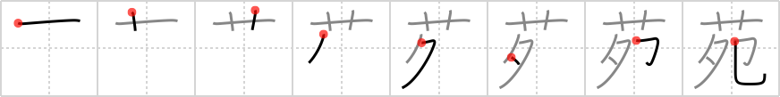

苑
← →
garden

Reading:
On-Yomi: エン、オン — Kun-Yomi: その、う.つ
Heisig story:
Flowers . . . mailbox.
Koohii stories:
1) [dingomick] 28-2-2007(214): Japanese "gardens" aren't anything more than a pot of flowers on top of the mailbox.
2) [desmidus] 8-6-2008(90): My mailbox is actually right in the middle of my garden, which kind of sucks since the mailman has to trample all my flowers to get to it.
3) [greenapple] 30-5-2006(45): You call flowers on top of your mailbox a garden!? Get me out of this 1LDK!
4) [nilfisq] 1-11-2007(14): (cf akrodha) The mailman has to be careful when delivering Hyacinth Bouquet's post. Her mailbox is in her garden, surrounded by fragile flowers. If he were to step on even one of those, he'd be in major trouble…
5) [tharvey] 20-7-2009(11): It is common to see a tiny garden of flowers surrounding amailbox.